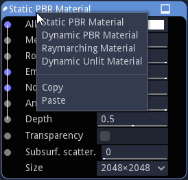
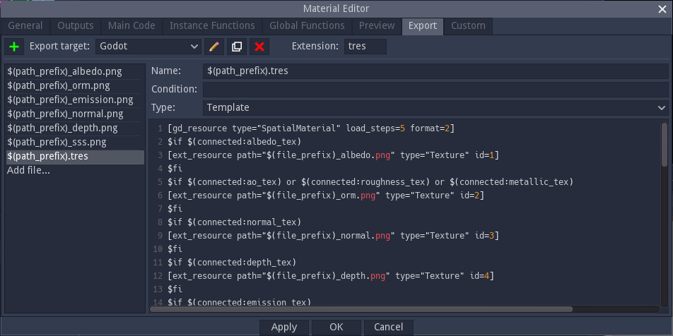

Material nodes¶
Material nodes are a specific type of shader nodes, with the following differences:
their outputs cannot be connected in the material graph, but are used to generate image files when exporting
they define a preview shader used in the Preview Panel and to generate preview for the website
they define export targets for the material
There can be only one material node in a material graph.
The type of material can be modified using the context menu. custom material nodes can also be copied and pasted using this menu.
A material node can be made editable using the Control+W keyboard shortcut. This shows buttons to edit, load and save the node.
Editing a material node will show the Material Editor window.
Creating and modifying Material nodes¶
Material nodes have a node editor dialog with additional tabs:
a Preview tab where a shader can be defined for the 3D preview of the material
an Export tab where export targets can be created with the definition of all files that must be generated
a Custom tab where text filter functions can be defined in GDScript to be used in the export templates
Preview¶
The preview tab can be used to define a shader in Godot Shading Language for the 3D preview.
Specific directives can be used to insert code generated from inputs and parameters:
$begin_generate / $end_generate can be used to define sections where parameters and inputs (prtefixed with a $ character) are replaced with corresponding generated code.
$definitions can be used to generate all definitions (of uniforms, functions, etc.) necessary for all generated code.
Exports¶
The exports tab can be used to create export targets for the material.
Export targets can be created, removed, duplicated, and their main file extension defined.
For each export target, it is possible to define several generated files.
Each file has a name (where $(path_prefix) is replaced), and an optional condition that can be used to skip useless generated files. Supported conditions are in the form $(connected:input_name).
There are 4 types of generated files:
Texture files, that are defined by an output index. The corresponding output will be rendered and saved as a file. Supported formats are PNG and EXR.
Template files are text files, modified using the following directives:
$begin_generate / $end_generate can be used to define sections where parameters and inputs (prtefixed with a $ character) are replaced with corresponding generated code. Those sections accept a list of keywords that describe text filters to be applied to the section. Predefined filters are float_uniform_to_const, rename_buffers, unity, unreal…
$definitions can be used to generate all definitions (of uniforms, functions, etc.) necessary for all generated code. Filters are also accepted.
$if / $fi sections can be used to remove parts of the generated files, using the file condition syntax described above.
$begin_buffers / $end_buffers sections repeat their contents for each buffer used in generated shaders. In those sections, $(file_prefix) and $(buffer_index) will be replaced with their values.
Buffer files are similar to Texture files and are generated for each buffer used in generated shaders. In the file name, $(file_prefix) and $(buffer_index) will be replaced with their values.
Buffer templates are Templates defined for each buffer used in generated shaders.
Custom¶
The custom tab can be used to create custom text filters for $begin_generate / $end_generate and $definitions sections in GDScript.